Sachbücher · The Painter, Einleitungen & Essays · nach dem Revelations-Archiv
Die Sachbücher
Der Erzähler als Kommentator: fünfundzwanzig Jahre Einleitungen, Vor- und Nachworte, Tribute und Zeitschriftenessays — gesammelt in einem Band und verstreut über Bücher anderer, von Gigers Necronomicon bis zur eigenen Bildbiografie.
The Painter, The Creature and The Father of Lies
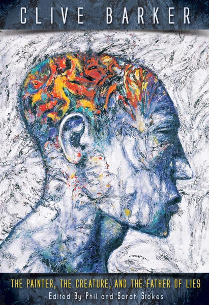
Worum es geht
Barkers gesammelte Sachtexte aus fünfundzwanzig Jahren: Einleitungen zu eigenen und fremden Büchern, Zeitungsartikel, Würdigungen und Fundstücke aus dem Privatarchiv — zusammengetragen von seinen Archivaren Phil und Sarah Stokes, mit Barkers Skizzen zwischen den Kapiteln. Earthling Publications, 2011; 2018 folgte das Taschenbuch beim Clive Barker Archive.
Clive über das Buch
-
Im Vorwort nennt Barker die Sammlung eine bittersüße Erinnerung an den Mann, der er einmal war und nie wieder sein wird — Brotkrumen, unbemerkt auf den Waldboden gefallen, die seinen Weg nachzeichnen: durch das eigene Leben und durch das der Freunde und Vorbilder, deren Stimmen ihn jeden Morgen an den Schreibtisch rufen.
Foreword · The Painter, 2011
-
Das Cover ist Barkers eigenes Gemälde — sein Lieblingscover überhaupt: ein im Kern schwarzweißes Bild, aus dem dort, wo der Verstand sitzt, die Farbe ausbricht. Darunter liegen zwei oder drei aufgegebene Gemälde; er strich die Leinwand weiß und zog dann einen blauschwarzen Pinsel über die Grate des alten Farbauftrags. Die Lüge des Titels steckt schon in der Oberfläche.
The Bleed Between The Apprentice And The Master · 2009
-
Die Los Angeles Times befand: Was bei anderen Autoren wie Resteverwertung wirke, sei hier eine Provokation, ihn endlich zu lesen — durch alle Texte laufe ein doppeltes Thema, Schöpfung und Berufung.
Los Angeles Times · 2011
-
Und Fangoria urteilte: Der Band zeige Barker ungeschützter als jeder Roman, jeder Film — und selbst als seine Biografie The Dark Fantastic.
Fangoria, No 303 · 2011
Ausgaben
Klick vergrößert das Cover
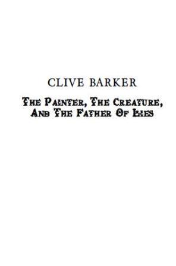
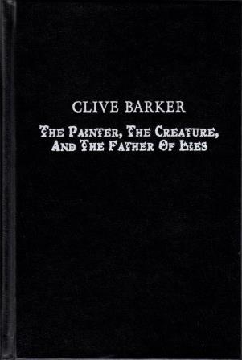
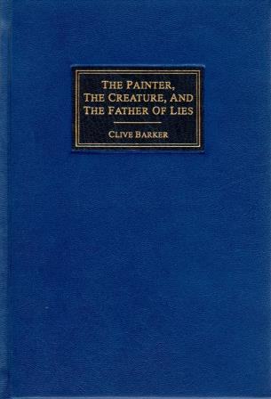
Einleitungen, Vor- & Nachworte
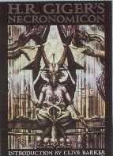
Worum es geht
Seit den Achtzigern öffnet Barker fremde Bücher: Einleitungen für Gigers Necronomicon und Miévilles King Rat, Vorworte zu 30 Days of Night, zur Studie Horror Video Games und zum Drehbuch von Gods and Monsters — zuletzt das Nachwort zur eigenen Bildbiografie Dark Worlds. Das Revelations-Archiv verzeichnet Dutzende solcher Beiträge; hier eine Auswahl.
Clive in fremden Büchern
-
Giger nur den „Künstler von Alien“ zu nennen, schreibt Barker, sei wie Michelangelo zum Ausstatter eines Films zu erklären: Die Gemälde seien das eigentliche Geschenk an die Imagination — wer ihre Codes erst gelernt habe, dem werde das Fremde vertraut.
H.R. Giger’s Necronomicon · 1992
-
Im Herzen von King Rat stehe nicht der König, sondern der verlorene Prinz — und Miéville habe die tiefe Einfachheit des Märchens zur Hand, ohne Ironie, ohne Anbiederung.
King Rat, Earthling Publications · 2004
-
Sir Gawain and the Green Knight legte ihm als Schüler einen Schalter im Kopf um: die mühelose Ehe von Realem und Fantastischem — der Grüne Ritter als Metapher für die unwiderstehliche Kraft der Natur, mit Wurzeln tief im Unbewussten.
BFS Calendar 2005 · 2004
-
Videospiele nehmen ihre Spieler tiefer in die Pflicht als jedes Kino, warnt er im Vorwort zu Horror Video Games: Wo das Andere so leicht dämonisiert und zum Abschuss freigegeben wird, beginne gefährliches Terrain.
A Little Light In The Darkness · 2009
-
Das schwerste Stück war das eigene: Für das Nachwort zu Dark Worlds, der Bildbiografie seines Lebens, fand er den bewundernden Ton seiner fremden Vorworte unbrauchbar — und schrieb stattdessen über Freundschaften, die vierzig, fünfzig Jahre Arbeit überdauert haben.
After The Word · Dark Worlds, 2022
Die Bücher
Klick vergrößert das Cover
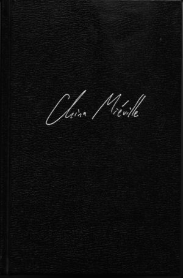
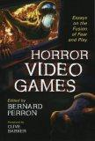
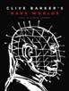
Weitere Essays
Worum es geht
Neben den Büchern stehen die Streuschriften: Reden und Tribute, Zeitschriftenessays, Liner Notes, Ausstellungs- und Werbetexte. Von der Rede auf Stephen King in Toronto über ein Time-Porträt Cornelia Funkes bis zu den Liner Notes der Candyman-Vinylausgabe — vieles davon später im Painter gesammelt.
Eine Auswahl
-
Als die Books of Blood in England auf höfliches, vernichtendes Schweigen stießen, war es Stephen Kings Stimme, die alles änderte — aus purer Großzügigkeit, sagt Barker in seiner Toronto-Rede: Heute versuche er, das Paket weiterzureichen und selbst eine Stimme für die Nächsten zu sein.
Stephen King Gala Tribute, Toronto · 2007
-
Sein Prüfstein unter den Bildern: Géricaults Floß der Medusa, als Teenager im Louvre entdeckt, kurz bevor er das Museum übersättigt verlassen wollte — es verfolgt seine Vorstellungskraft bis heute.
Rue Morgue, No 41 · 2004
-
Im Nachruf auf H.R. Giger schreibt er: Die Dunkelheit erkundet jeder allein — umso kostbarer der seltene Weggefährte, der den Abgrund besucht hat und davon erzählen kann.
A Remembrance Of H.R. Giger · Hi-Fructose, 2014
-
Für Time erklärte er Cornelia Funke zur möglichen nächsten J.K. Rowling: Inkheart beweise, dass die Imagination die Verachtung überwiegt, die das Erwachsensein dem Fantastischen entgegenbringt — und bereitsteht, zu heilen, wenn man zurückkehrt.
Time (US edition) · 2005
-
Zum Start seines Marvel-Imprints Razorline beschrieb er die vier Serien als Türen zu zehn neuen Wirklichkeiten — den Decamundi, von Verleger Carl Potts augenzwinkernd „Barkerverse“ getauft.
Comic Buyer’s Guide · 1993
Erschienen in
Klick vergrößert das Cover
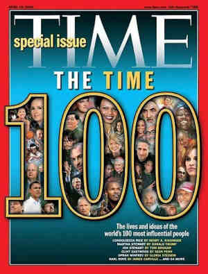
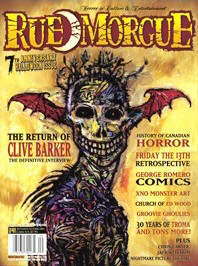
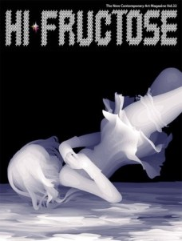
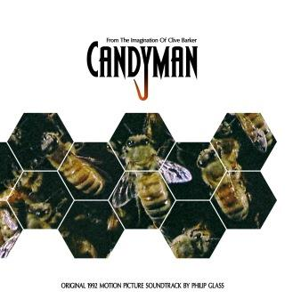
Cover-Abbildungen: Revelations-Archiv (clivebarker.info) · Artwork © Clive Barker bzw. der jeweiligen Verlage